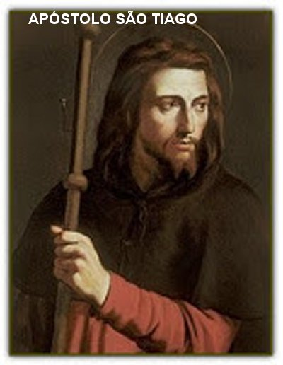
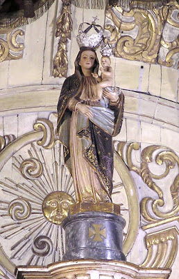

“PRELÚDIO”
O NOVO TESTAMENTO nos ensina que JESUS depois da Ressurreição, antes de partir para a eternidade, encontrou-se com os seus 11 Discípulos, num monte que lhes determinara anteriormente, próximo a cidade de Cafarnaúm na Galileia. Ao Vê-LO, todos se prostraram diante DELE, e JESUS lhes disse: “Toda autoridade sobre o Céu e sobre a Terra ME foi entregue. Ide, portanto, e fazei que todas as nações se tornem discípulos, batizando-as em nome do PAI, do FILHO e do ESPÍRITO SANTO, e ensinando-as a observar tudo quanto vos ordenei. E eis que EU estou convosco todos os dias até a consumação dos séculos!” (MT 28, 19-20)
Era a grande Missão que NOSSO SENHOR confiou aos seus Apóstolos, os quais cheios de entusiasmo, logo começaram a articular providências, objetivando concretizar o objetivo do MESTRE. Ordenadamente, além da preciosa e constante assistência as Comunidades que existiam, buscaram locais adequados onde fundaram outras Comunidades Cristãs para propagar e ensinar tudo o que NOSSO SENHOR JESUS CRISTO havia lhes ensinado. Esta providência incluía o apoio e a proteção das Comunidades existentes, que viviam um período de tristeza com a ausência do SENHOR.

Por outro lado com o objetivo de
evidenciar os parentescos entre a Sagrada Família e os diversos Apóstolos de JESUS,
buscamos nas leituras Bíblicas que informam que São José, esposo de NOSSA
SENHORA, MARIA DE NAZARÉ, era irmão de Cleofas, o qual em idade era mais velho
do que José. Cleofas era casado com a outra Maria, que os Evangelhos denominam
de Maria de Cleofas, e com ela teve três filhos: Tiago Menor (Apóstolo de
JESUS), José (conhecido com o nome de Barsabás, o Justo) e Maria Salomé. A
bonita jovem Maria Salomé que era sobrinha de NOSSA SENHORA, se casou com
Zebedeu. Desse casamento nasceram dois filhos: Tiago Maior (Apóstolo de JESUS) e
João Evangelista (Apóstolo de JESUS, e também, escritor de um Evangelho,
escritor de três Cartas que estão no Novo Testamento, e também é o autor do
Apocalipse ). Esta realidade nos faz entender que
João Evangelista (aquele que era o Discípulo 
A intenção de realçar este parentesco familiar tem o objetivo de evidenciar, que Tiago Maior foi criado num ambiente santo, que modulou o seu espírito de modo admirável, com grande dignidade, imenso amor e plena fidelidade, fazendo com que ele fosse um homem de decisão e de caráter imaculado. E por isso mesmo, foi o enviado Divino para uma evangelização corajosa e impressionante, na qual se aplicou com todas as forças da sua existência, para converter a Península Ibérica. Foi uma realidade linda e inesquecível que procuraremos relembrá-la aqui.
Muitos foram os livros consultados, assim como as preciosas informações alcançadas através de membros do Governo Espanhol. Sem anotarmos nomes, deixamos aqui registrado o nosso muito obrigado. Não são informações confidenciais. São fatos para vida, que devem ser difundidos para conhecimento de todos. Não só como história, mas como demonstração de invulgar espírito amoroso e dedicado a DEUS.
Nós do APOSTOLADO DOS SAGRADOS CORAÇÕES nos sentimos felizes e realizados, ao completarmos este Site, porque descortinamos mais uma face do imenso e desmedido Amor de DEUS por cada um de nós, Seus Filhos. Assim como também, pelo incontido prazer de revelar a maravilhosa e impressionante intervenção da MÃE DE DEUS, sob o nome de NOSSA SENHORA DO PILAR, que construiu na Espanha mais um precioso local de romaria, de graças e bênçãos Divina. Por todas estas verdades lhes convidamos, prezado leitor, acompanhar esta linda história até o final.
“APOSTOLADO DOS SAGRADOS CORAÇÕES”